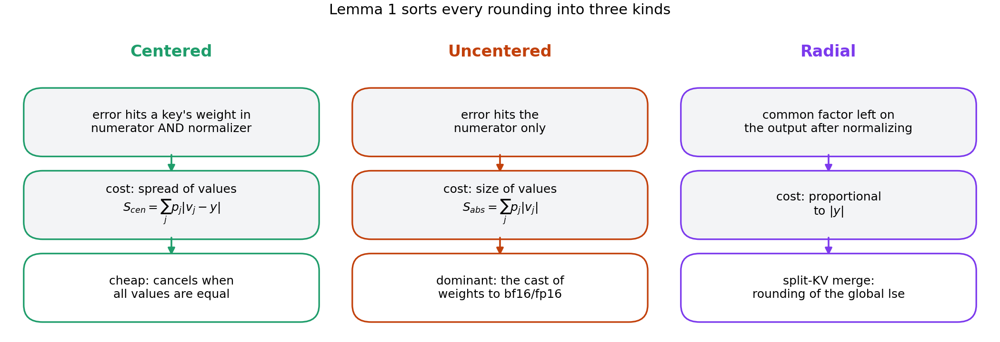
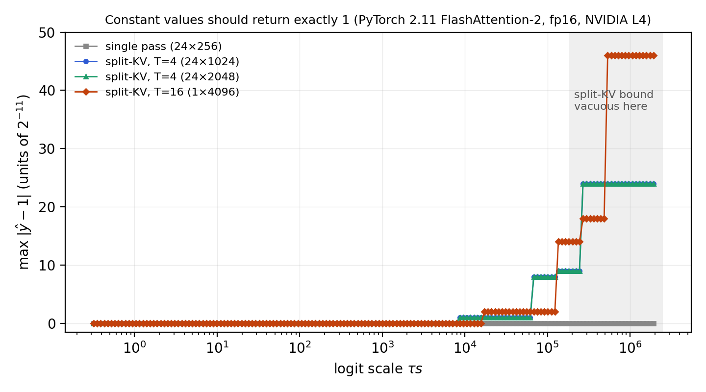

Rounding error in FlashAttention: centered, uncentered, and radial
A forward error bound for FlashAttention-2, a comparison with two-pass attention, and a measured scale error in the split-KV merge.
The idea
Perturb each softmax weight by a factor 1+βj. The output moves by Σj pj βj (vj − y), up to a normalizing factor. So an error that hits a key's weight in the numerator and the normalizer alike costs only the spread of the values around the output. That sorts every rounding in the kernel into three kinds.

Measured on an NVIDIA L4
PyTorch 2.11 FlashAttention-2, fp16, d = 64, τ = 1/8, identical keys and every value equal to 1, so the exact output is 1. Largest |ŷ − 1| in each logit range, in units of 2−11:
| batch × keys | kernel | τs < 27 | [27, 212) | [212, 216) | τs ≥ 216 |
|---|---|---|---|---|---|
| 24 × 256 | single pass | 0 | 0 | 0 | 0 |
| 24 × 1024 | split-KV, T = 4 | 0 | 0 | ≤ 1 | ≤ 24 |
| 24 × 2048 | split-KV, T = 4 | 0 | 0 | ≤ 1 | ≤ 24 |
| 1 × 4096 | split-KV, T = 16 | 0 | 0 | ≤ 2 | ≤ 46 |

A published bound that fails
The O(u log n) relative-error bound of Hsu et al. (ELSA, Theorem 1) for online-softmax attention is false as stated. It misses a cancellation factor and a logit-size term; the paper gives counterexamples of both kinds, run in their pairwise merge order against an 80-digit reference.
What it does not establish
- Whether trained models reach the logit range where the split-KV error survives the final fp16 cast (roughly τ max s in the thousands). That is the open question.
- A bound for the largest measured errors: at those logits the split-KV bound is vacuous, and the 2.2% is a measurement.
- Exact tensor-core behaviour. The hardware checks model tensor-core accumulation as round-to-nearest fp32.
- The GPU comparison of FlashAttention-2 with two-pass used PyTorch's automatic kernel selection, so some runs at n = 4096 may have used split-KV.
The fix itself is not new: FlashAttention-3, FlashAttention-4, FlashInfer, vLLM and xformers already renormalize their merges. The paper is AI-assisted; its disclosure section says how.